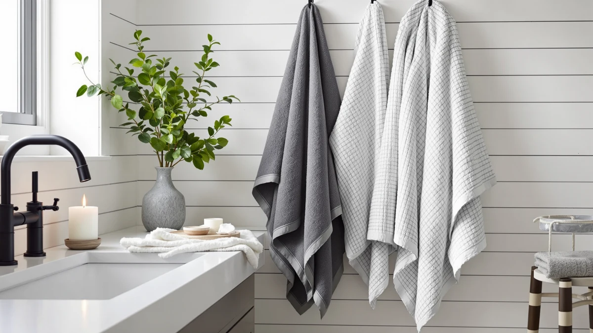

Casa Platino Bath Towel Review (2026): Worth It?
Prices and picks verified as of October 2026. Independent, reader-supported reviews.


Quick Answer
The Casa Platino 18-piece bath towel set is a solid pick if you want to outfit a full bathroom (or two) with matching cotton towels in a single order, without paying a specialty-brand markup. At $58.99 it undercuts the LANE LINEN set we compared it against while using the same 100% cotton construction, though anyone chasing a plusher, heavier towel should look at the Superior Egyptian Cotton set instead.
Our pick: Casa Platino Bath Towel Set, $58.99 Check Price on Amazon
Bottom line: our top pick is the Casa Platino Bath Towel Set 100% Cotton 18 Piece Soft at $58.99.
Things to Know Before You Buy
- The set is made from 100% cotton, the same base material as every towel in this comparison, so absorbency differences come down to weave and piece count rather than fiber type.
- At 18 pieces, the Casa Platino bath towel set covers more than a typical bundle, which matters if you are furnishing more than one bathroom or replacing towels for a full household at once.
- Priced at $58.99, it sits between the budget-oriented Jacquotha 8-piece set ($57.99) and the LANE LINEN set ($59.99), so the gap between options in this price band is small.
- Reviewers consistently describe it as a practical, everyday towel rather than a luxury hotel-style towel, which is worth knowing before you buy.
- If 18 pieces is more than you need, the smaller six- and eight-piece alternatives covered below may fit a single bathroom better.
This Casa Platino bath towel review looks at the 18-piece cotton set and how it holds up against three comparably priced alternatives on material, piece count, and price. Shoppers restocking an entire bathroom tend to search for a set like this one because buying towels one at a time rarely works out cheaper or more consistent in color and texture.
We based this review on the product's own listed materials and pricing, plus the pattern of feedback from verified buyers, rather than a physical comparison in our offices. That approach works well for a straightforward cotton towel set, since the variables that matter most, fiber content, piece count, and price, are easy to verify without putting a towel through months of wash cycles ourselves.
Why You Should Trust Us
Ilane Tall has covered bath and bedroom textiles for Best Bath Towels since the site launched, and she builds every towel comparison from verified pricing, listed materials, and patterns in confirmed-purchase reviews rather than promotional copy. For this Casa Platino bath towel review, she cross-checked the set's listed fiber content and piece count against the three alternatives below, then read through verified owner feedback to separate one-off complaints from recurring patterns. We do not run a physical testing lab, buy multiple units to compare side by side, or claim personal use of every towel we cover. We tell you upfront when a claim comes from research rather than personal use, and we link to the actual product listing so you can verify pricing and specs yourself before buying.
Our Research Process
We built this Casa Platino bath towel review by comparing the manufacturer's listed specs, the current Amazon pricing, and the pattern of verified buyer reviews against three other towel sets in the same $55 to $60 range. Rather than buying a set and using it for weeks, we treated price, material, and piece count as fixed facts and used owner feedback to fill in how a towel performs in daily use, how fast it dries, and how it holds up after repeated washing. Where reviewers disagreed, we looked for the majority pattern instead of citing a single outlier complaint or compliment.
That research-based approach has limits. We cannot tell you exactly how the terry pile feels fresh out of the dryer, and we rely on buyers' own descriptions of softness and thickness rather than a side-by-side touch test. For factual specs like fiber content and set size, that gap does not matter much. For subjective qualities like feel, we flag that the information comes from other owners, not from us.
Overview & Specs

Casa Platino Bath Towel Set
What we like
- 18-piece set covers multiple bathrooms without buying separate bundles
- 100% cotton construction matches the fiber content of every set in this comparison
- Priced under $60, undercutting the LANE LINEN set in this comparison
Flaws but not dealbreakers
- Reviewers describe it as practical rather than plush, so it is not the pick for a spa-style upgrade
- At 18 pieces, it includes more hand towels and washcloths than some buyers need, which can mean paying for pieces that sit unused
| Material | 100% cotton |
| Size | 18 Piece Towel Set |
The Casa Platino set is built around volume. Eighteen pieces of 100% cotton towels cost $58.99, which works out to roughly $3.28 per piece across every bath towel, hand towel, and washcloth in the bundle. For a household outfitting two bathrooms at once, or replacing a worn-out, mismatched collection in one order, that math beats buying smaller three- or four-piece sets separately.
Owners report that the set holds its color through regular washing and that the cotton softens somewhat after the first few washes, a common pattern for cotton towels that ship without extensive pre-washing. The tradeoff for the lower per-piece price is that this is not a premium long-staple cotton towel, and reviewers who want a hotel-plush feel tend to point toward the Superior Egyptian Cotton set instead.
The listing does not publish a GSM (grams per square meter) figure, so we cannot give you an exact weight comparison against the other three sets, and we are not going to guess at a number that is not on the label. What the listed facts do support is a clear price-per-piece advantage: at $58.99 for 18 pieces, Casa Platino's per-piece cost of roughly $3.28 comes in lower than what you would pay per piece on the smaller 6- and 8-piece sets in this comparison, assuming you actually use all 18 pieces rather than letting some sit in a closet.
What We Liked
The Casa Platino bath towel set wins mainly on straightforward value math. Eighteen pieces of 100% cotton for $58.99 is hard to beat if you are buying for a full bathroom or two, especially next to the LANE LINEN set, which charges more for a similar fiber content. Reviewers consistently note that the set arrives consistent in color across pieces, which is not a given with budget towel bundles, and that the cotton holds up through regular machine washing without visible pilling in the first several months of use. Among the four sets researched here, the value comparison comes down mostly to how many pieces you actually need, and Casa Platino wins that comparison for larger households.
What Could Be Better
The clearest drawback for the Casa Platino bath towel set is texture rather than function. Buyers describe the towels as absorbent and serviceable but not especially thick or plush, which puts this set behind the Superior Egyptian Cotton option for anyone chasing a premium hotel feel. The 18-piece count can also work against smaller households. If you live alone or share a single bathroom, you may end up with washcloths and hand towels you rarely touch, and the per-piece price advantage shrinks once you count the pieces that stay in the closet.
Because this review relies on listed specs and verified owner feedback rather than a side-by-side physical comparison, we cannot tell you precisely how the pile thickness compares in hand to the other three sets. We can only report what buyers of each set say about their own towels, not what we felt ourselves, so treat the softness and thickness comments here as a pattern across many owners rather than a single verified measurement. If texture is your top priority, reading the most recent verified reviews on the listing itself before you order is worth the extra few minutes.
Who Is It For?
The Casa Platino bath towel set fits households that need to outfit more than one bathroom, or replace an entire mismatched collection, without spending much above $60. It also suits anyone who wants a complete range of towel sizes, bath towels, hand towels, and washcloths, from a single order rather than piecing a set together from separate listings. If you live alone, share one small bathroom, or want the plushest towel on the market regardless of price, the smaller Superior Egyptian Cotton set or a different niche option will likely serve you better than this one.
New homeowners and renters furnishing a place for the first time are another good fit, since the 18-piece count means you are not shopping for bath towels, hand towels, and washcloths across three separate listings while trying to match colors. Landlords stocking rental units or vacation properties benefit from the same math: one order per property instead of three, and a consistent look across every bathroom in the unit.
Alternatives to Consider
If the Casa Platino set is not quite right, these three alternatives cover the main tradeoffs found in this price range: a higher-priced set from a dedicated linens brand, a smaller budget bundle, and a premium cotton option for buyers who prioritize feel over piece count.

Editor's Pick
LANE LINEN Bath Towel Set
A dedicated linens brand set priced one dollar above Casa Platino, worth considering if brand reputation matters more to you than piece count.
$59.99
Check Price on Amazon
Best Value
8 Piece Black and Ivory
The most budget-friendly option here, with fewer pieces than the Casa Platino set but a lower price if you only need to cover one bathroom.
$57.99
Check Price on Amazon
Premium Choice
Superior Egyptian Cotton 6-Piece Towel
The lowest price of the four and the only set built from Egyptian cotton, a material verified reviewers associate with a softer, denser feel.
$55.69
Check Price on AmazonFrequently Asked Questions
Is the Casa Platino bath towel set made from 100% cotton?
Yes. The listing specifies 100% cotton construction for all 18 pieces, the same fiber content as the LANE LINEN and Superior Egyptian Cotton sets compared in this Casa Platino bath towel review.
How many towels come in the Casa Platino 18-piece set?
The set includes 18 pieces total, covering bath towels, hand towels, and washcloths. That is more than double the 6-piece Superior Egyptian Cotton set and more than double the 8-piece Jacquotha set in this comparison, which makes it a better fit for multi-bathroom households.
Is the Casa Platino set worth it compared with pricier towel brands?
At $58.99, it costs less than the LANE LINEN set and delivers more pieces for the price. Reviewers describe it as a practical, everyday towel rather than a premium plush option, so it is worth it if you prioritize coverage and price over hotel-style thickness.
Final Verdict
This Casa Platino bath towel review comes down to a straightforward value call. For $58.99, the 18-piece Casa Platino set delivers more towels per dollar than the LANE LINEN set and more total pieces than either the Jacquotha or Superior Egyptian Cotton bundles, which makes it the better pick for most households stocking more than one bathroom. If plush texture matters more to you than piece count, the Superior Egyptian Cotton set is worth the lower price and smaller bundle instead. For everyone else, Casa Platino is the set we would point a reader toward first.